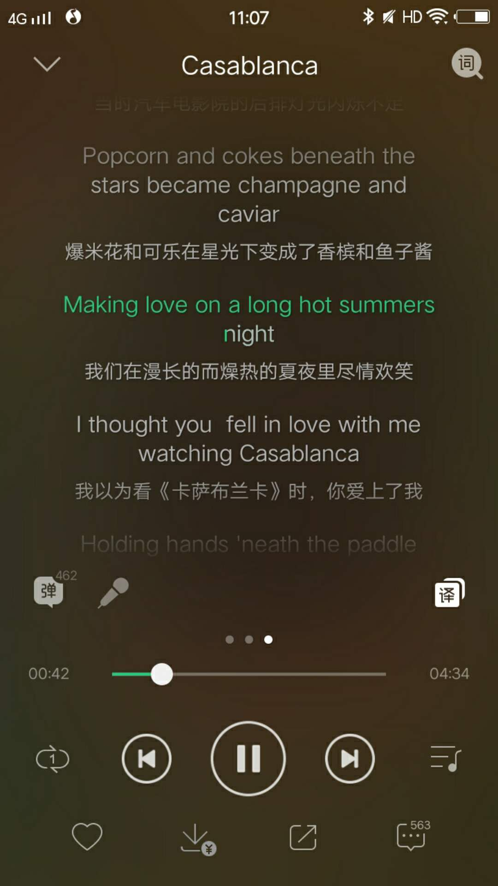

微博
免责声明：此微博的内容均为彭祖良所写，与彭良祖无关。
2018
- 08.17
- 我曾经说过要写出具有人文关怀的代码，这当然是可操作的，而并非是一句空话。把人文关怀四个字扩充一下应该是：发乎情止乎礼的对人的尊重。不过我还没有想到更详细更合适的描述。暂且把这个搁置好了。
- 08.17
李银河讲述了她的快乐观。在我之前微博里的分级（按李银河的语言来说是，自我实现>性爱>吃喝拉撒）中，以直男的口吻卑鄙而讽刺性地忽略了情感要素，主要原因是我想尽量避免直接谈论感情：这个东西说不准的，情感的微妙之处需要用深思熟虑的语言才能直接表达或者用奇妙的比方来意犹未尽地暗喻，否则只会越说越乱，牛头不对马嘴。近期情难自抑，讲的比较多，真是令人羞愧。这让我想起来本科的时候写的不为人知的一叠情书，我那时自比是阿里萨，在每一个字的情火里自焚，最后终于羞愧到把整个笔记本撕毁，真是可惜：我已经记不得我写了什么了。以后要把感情保存下来才是，这样才记得我是如何成为今日的我。阿里萨表白被费尔米纳拒绝的时候其实也正是费尔米纳失恋的时候，于是费尔米纳的朋友安慰她说，爱情并不意味着幸福，抑制爱情可以带来幸福。这样的答案是令人惊讶的，但细想一下是多么正确：生命中还有多少事情可以使一个人幸福呀。阿里萨在被安慰时听到的话是，“请你好好专心于自己的事业，没有事业就没有爱情”。这样的安慰我只能不置可否，和有情人做快乐事，不问是缘是劫。但其实这般安慰算不上苛刻。彭良祖在那时受到的安慰是，“把你的不开心说出来让我开心开心”:P。
而自我实现是什么感觉呢?一个可以举的例子是我在研一下学期高级几何课写的 课程笔记。虽然目前来看这份笔记有诸多可以改进之处，但是是我那时尽最大努力得到的成果。成就感满满。当写完前言决定停下时，我似乎大病了一场。在宿舍躺了一两天，浑身气力都好像被耗尽，真是花心血。自我实现说的就是这种感觉吧。奉献、上进、最终看到结果。
这样一来，最大的快乐或许就是与爱人一起自我实现。而爱情和自我实现都很难，这两个加在一起，却至少有一个很简单的方式实现：做梦。
说回李银河的快乐观，有兴趣的读者可以去看看。
- 08.17
- 在看 H.C. Longuet- Higgins 的八点算法的时候应该听一听 Bertie Higgins 的Casablanca。吐槽下图的歌词翻译:P

- 08.16
讲一个源自初中的友情故事，情节人物属于虚构，讲述的内容却是真实。
好朋友阿良和阿祖在沙滩边上奔跑玩耍，阿良捡到一根世界上最好吃的香蕉。阿良实在是饿的不得了，这香蕉不够两个人吃，于是他想要吃独食，将其藏在沙堆里，没有告诉阿祖。阿祖说饿了想吃东西，阿良说他也饿，走不动了，也没有东西吃。于是阿祖独自去觅食。阿良趁着这个空挡把香蕉挖出来，吃的饱饱的。阿祖没有找到很多吃的，回来后分了一些给阿良。阿良只说胃口不好。一天后阿祖通过观察阿良屙的屎发现世界上最好吃的香蕉被阿良吃了，并且自己还受到了欺骗。阿祖因此怒不可遏，没有告诉阿良他发现了这个事实，只暗自发誓不再和他做朋友，这辈子不再跟他说话。阿良做了亏心事，以为没人知道，却不料阿祖会观察他屙的屎。其实后来阿良有很多次想问阿祖，“你为什么不理我”，可每一次都是欲言又止。其实后来阿祖已经原谅了阿良，或许阿良有不为人知的苦衷，一直想和他一笑泯恩仇，却始终没有机会再见面。
该不该原谅一个说谎的朋友呢？我不知道。我是故事里爱看别人屙屎的阿祖，而阿良是我的好朋友。现在想来阿祖有两种做法。
一是对阿良破口大骂，“我去你妈的有东西不给老子吃，还撒谎，算什么朋友？老子饿死了，我们不要做朋友了，你去死吧”！这种做法可以理解为是阿祖要发泄愤怒，冲动而又没有任何考量。阿祖是想让阿良明白，说谎是不太对的，会因此失去友情和尊重。另一方面阿良听到这话，或许也会大发雷霆，“我比你更饿，吃独食都不让，算什么朋友？老子饿死了，我们不要做朋友了，你去死吧”！阿良因此恍然大悟，原来人是这么一回事，从此成为了一个大骗子。
二是告诉阿良说，“我闻了你屙的屎的味道，你吃到了世界上最好吃的香蕉却没有给我吃，还撒谎，可能你有自己的苦衷，但是我不能接受这样，因为我也想吃最好吃的香蕉。我们不要做朋友了，你不懂分享”。阿祖是想让阿良明白，做朋友要学会分享，同时千万不能撒谎。另一方面阿良听到这话，也许会默默反思，“是啊，我这样撒谎是我不对，即使我有苦处。但是你还能原谅我，你真是好朋友！”阿良因此心怀愧疚，原来做人应该这个样子，从此成为了一个不再说谎的人。
阿祖可能也会想，他不愿阿良为这件事感到愧疚，食色性也，有什么好羞愧的呢？于是会采取第一种做法。十年前的他哪会想那么多？一生气就沉默。无论如何，世界上最好吃的香蕉已经被吃掉，经过阿良的消化、排泄和细菌分解变成了一阵风，消散在世间。这阵风或许会吹响树叶，一声呢喃，然后变成世界上最好吃的南瓜。世事莫非都是这个样子？一切都在不可避免地走向庸俗，被遗忘后又被重演。
(阿祖从来没有跟阿良说过他的发现，谁能够从屎里看出最好吃的香蕉被吃了呢？)
- 08.16
- 今天问我为什么穿不同颜色的袜子的人会得到一个简单的答案:“我有一个小盒子，里头装着一只灰袜子和一只黑袜子”。
- 08.15
突然想起来前几天跟朋友搭讪被问到的一个意味深长的问题，“什么是评价一个人智商的最好方法”，我一本正经地回答了一番，但现在我来纠正一下我给的答案，纠正如下(抖机灵)。问一个智商明明不高的人“什么是评价一个人智商的最好方法”就类似于问一个明明不喜欢自己的人喜不喜欢自己。
总之最近就是深切地感受到自己的愚蠢没有边界就是了:P
- 08.15
同学阿Q研究生入学选导师。和教授A说的好好的要当他学生，后来却跟着(阿Q认为更好的)教授B去了。其实呢，你要阿Q说到底哪个教授更好，为什么选B，他不一定讲得出令人信服的答案。另一方面，这样的行为难免会受到其他人的道德谴责，阿Q自己的良心也过不去。为了应付别人，避免流言蜚语，那就跟着教授A好了。另一种方法是应付自己，承认自己的贱，并设法喜欢上这种贱——就像公共汽车对阿兰说的那样(《东宫西宫》)——选择跟着教授B。依我看，这两种应付方式都可以使自己得到安慰，所以我就同时使用这两种：用卑鄙当作自己的通行证，用真诚做一切事。这该是很不错滴。
如下两种方式的混合使用具有讽刺性，口嫌体正直。在江湖上混要讲究人物形象，貌赛潘安的好处自不必说，非外观体态因素的形象也很重要哦。比如，做事表现得靠谱出色，才有机会接到心仪的项目，一个闪闪发光有崇拜点的形象容易得到女孩的青睐。我为什么不粉饰一下自己的形象，当一个salesman呢？或许是因为什么样的灵魂就需要什么样的养料，我可能已经习惯把生命中的许多元素开成一个讽刺的玩笑——就像《The Importance of Being Earnest》里讽刺的一样。
- 08.14
- 我可能是跟着鲁迅学坏的，他说他向来以最坏的恶意揣测他人，真是刻薄得紧呢！我伯伯告诉我这是我们彭家祖传的刻薄(???)，你小兔崽子这辈子都别想改。就很后悔没有出生在一个高情商家族……
- 08.12
- 《沉默的大多数》里的杂文们谈到了责任感、真实、智慧、道德。真是常读常新。然而我又新发现，作者的这些价值观虽然是我崇敬的，被我视作是某种“真知”和“准则”，但是它们并不是在哪都适用，更不是时刻被人遵守，甚至不为人所知。我肯定不会以传播这些价值观为己任：我巴不得把这些宝贝藏好呢！依我所见，人们依照自己的本能去吃去爱，懂得一点点道理，这样就够了。如此一来，人们就会感受到快乐，假使我是他们的爸爸，我也该心满意足。当然，大多数时候我也是依照本能在生活，只有当面临考验时，才会显现出自己的价值观。
- 08.12
- 在这个下雨天的周末又翻了一下《沉默的大多数》里的一些文章。我发现王小波在论证自己的某些观点时会使用极端的比方：假若A与B 是对立的而王小波支持A，他就会把B推到北极，从而得到B太冷酷所以不合适的结论。这样的论证方式是有趣的，同时至少能够安慰他自己 (和我)。或许大多数时候能够进行自我安慰就足够了吧？通过逻辑推理来论证自己的想法，最后安抚了自己的心，这样就足够让人活得明白和快乐。
- 08.11
我的老板一直希望我学会的，就是确定好一件事情后就坚持地把它做到最后，把结果做到自己满意的状态。这样一来，一个人将由此获得信心和勇气，敢于去挑战任何事。我认同这个观点，并希望自己能渐渐地变踏实。但这个道理对爱情不适用，或者说不够用：你自己做好自己的，或许仍然是不够的，还要顾及一下对方的感受。爱情是一个只属于强者的国度，以前我觉得自己是个弱者，是个坏小子，进不去。我看见一个可爱女孩就心猿意马，谁也保不准我不会去追她。因此我把自己叫做“彭祖”，因为这样的我显得没什么“良”心。
但这阵子见过了这么多没经受住考验而夭折的爱情(十几起爱情事故)，我明白了一个最简单的道理：一个人只要有一个优点，就足够爱一辈子了，然后再就要细心地经营。许多爱情的破碎完全是两个(或其中一个)不了解自己、彼此和人性的人在那里瞎搞，带来许多烦恼。我是弱者，并非因为我没有良心——有很多强者没有良心——而是因为尚且不具备经营一份爱的实力和智慧。我在生活中遇到了许多爱得很好的人，我对他们感到敬佩。希望在遇到赐我良字的人之前，我能够获得这样的实力。也希望自己能够像树上的男爵一样坚定地保持自我。
- 08.11
- 又想起了和下文男方的一些事，突然有些愤愤不平。大一时经常在一起吃午饭，但是他基本上都在和自己的异地女友通话，用一种从未跟朋友展现过的温柔的嗓音。我那时想，你们那个电话信道里，究竟有多少糖？怎么吃也吃不完的吗？我暗下决心不要找这样的女朋友，否则会被烦死的(甜死的？？？)。我把自己的想法如实地问了出去，他只笑笑不说话，或者笑着说了一句“女孩子嘛”，我记不得了。那时我把这个当作是爱情成功人士的谦虚的微笑，现在想来这份笑容多少怀了一些爱得深沉的苦涩。那时他也和我谈论他们班上哪个女孩子漂亮，言语中带有一种克制。我想，以他的本事，抛弃爱情去成就一番事业算不得难，又以他的本事，谈一份不异地的校园恋爱也算不得难。我为他的这份爱感到不平，去他妈的臭女人！
- 08.11
今天又在朋友圈发现爱情长跑十年的情侣分手。我和男方也是相识多年了，为此感到惋惜。另一个共同的朋友一号曾批评过这段感情，说她配不上他。或许朋友一号知道那个女孩的一些内幕，我当时未作深思，只是附和了一下一号的想法，说那个女孩子就是不太聪明。我说的当然是(自我以为的)实话，现在想来我哪有那么大本事说别人，只有在爱情中才能学会爱情哦。
上文"为此感到惋惜"中的“此”指的当然不仅仅是男方。闹到分手的境地了，谁是无辜的呢？我为这段感情惋惜。据说这十年里他们也分分合合闹过很多次，我希望他们能够克服这一关、走到最后。十年啊，彻底分开后哪还有力气再从口袋里掏出自己的天真、承诺、坚守给新欢看呢？它们还会存在吗？我又摸了摸自己的口袋，真是满满当当。只是我打不开，只有那个能拔出紫青宝剑的人才能打开:P
- 08.11
今天和学长们吃了个饭。在聊天时，他们惊讶于我不打牌的决心，他们对爱情的态度使我感到吃惊。学长一号真是风流，骑驴找马然后卸磨杀驴是常规操作，他还以此振振有词地教导我，趁年轻赶紧玩几个妞。我真怕自己的大好前程被他这番话耽误，以后出了事需得找他负责才是。学长二三号双商和唱作俱佳，是有故事的人。撩一两个妹子对他们来说又有何难？只是他们不再轻易谈恋爱，先是跟我说谈爱哪有打牌有意思，再是跟我说打牌不就是恋爱嘛来来来。
他们该有一些难言之隐才是：经营好一份感情需要的心力，超出了他们现在能够支付的范围，简单来说就是心累。这里的情节可能都是我编造的，我哪有这么多优秀的学长？但是挂羊头卖狗肉，卖的至少还是肉，各位看官看着买看着吃就好了。
- 08.10
- 和同学看了《一出好戏》。导演想要用这个故事揭示人性：在法律触及不到的地方，人的动物性就开始暴露。影片里有很多讽刺和暗喻的摄影技巧，看得出来是用心之作。我只是觉得剧情实在是太刻意雕琢，就像是一个比喻打得太直白，听众瞬间就觉得索然无味。
- 08.08
- 看到了何洁"婚内出轨"的新闻，好脆弱的感情，不理解为什么会有这样的男性。女孩子找对象结婚或许看对方老不老实靠不靠谱才是最重要？这样至少不会被出轨(???)。需要补充一点的是，我既不老实又不靠谱，满嘴都是跑火车和胡说八道。
- 08.07
- 说字如其人我是信的：我的字和人一样，长得歪歪斜斜。但是呢我不太相信文如其人：你看，写童话故事的曹文轩被爆性骚扰。这个新闻当然没有使我惊讶。或许一个常见的思维误区是将自己对作品的崇拜转移到作者本人，一只能下好吃的蛋的鸡不一定是好鸡呀。
- 08.05
- 所有的report都没写好，所有的良祖都已经启程，我不得不承认， K740是一列不那么仓促的火车:P。慢归慢，往者要归来啦，回学校好好干！
- 08.05
- 家人非要说我是杠精。我只好证明我不是。首先杠精一定单杠双杠都玩的很溜，但是我从小就不敢玩，所以我不是杠精。另一方面，我跷跷板倒是玩的挺好，如果说我是跷跷板精我必须得接受。
- 08.04
到底过去多久了呢？我终于有勇气来谈谈我的感情，大致可以概括成一个故事如下。
"不知所谓的男孩一号和柔弱坚定的女孩相亲相爱，在山谷里屠龙，危机四伏，各自为战。女孩为恶龙所擒又被男孩二号所救。在这一擒一救之间有千万声呼喊，男孩一号本来可以听到，却没有。女孩倾听着自己的心声与追寻着自己对爱的感觉，爱上了男孩二号。"
或者另一个故事如下。
"一男一女住在一起过日子，有一阵子男方来大姨妈不舒服，没怎么做饭给女方吃。女方理所当然地会饿，于是就去别人家吃。饿的时候吃到的饭分外甜，因此就不大记得男方也曾给她做过香甜的饭。这下好了，她说她不回来了，这辈子都想在别人家吃饭。"
当然，这两个故事就只是具有讽刺性的故事而已，和真实相距十万八千里，真相当然更加复杂和残忍，根本无法用来安慰任何人。所以索性编几个故事给自己听，随自己的心意篡改和把玩，倒是可以满足一下自己的恶趣味。
- 08.04
- 或许只有在家里才有那么多闲情逸致，看风卷云，去忆往追来。是哦，往者不可谏，来者犹可追。我在漫无边际的思索里能得到智慧吗？往后要着手当下，放眼未来。
- 08.03
- 我喜欢家里吃饭时的奇景，时光流转，人来人往，说笑不断，思绪万千。只有我一个小孩在家，顺理成章地成了他们攻击的对象。七大姑说“谈了女朋友没呀”。我说“……”，八大姨说“赶紧找一个啊”，我说“……”。邻家老奶奶说,"加油啊，找到算你本事，她愿意跟你睡觉是她的事"。
- 08.03
- 回家好几天了。我感觉家里和谐温馨，似乎家人们都长大了，他们不再为了鸡毛蒜皮的小事而争吵，说话声音小了八个调。我感受到前所未有的温暖，我似乎拥有了新的力量继续前行，我希望能够将关怀和爱带给身边的人，我想大声告诉这个世界人活着除了挨锤挨操之外还有很多乐趣可挖掘(link)。说家人们长大了其实是在说我长大了，长大莫非就是能够从其它大人的四两话里听出一千斤的无可奈何？加在我身上的重量终于越来越多。
- 08.02
- 我的奶奶没有念过书，但是她是一个有智慧和人文素养的人。她像海子一般对我说，“我不关心人类，我只关心你”。我今天听她用土话说到“为人不自在，自在不为人”时才明白几个月前她打电话给我说的内容是以一种巧妙的方式给我施加压力，督促我努力学习。这样的聊天在以前是没有的，因为以前我听不懂，自然就留不下痕迹在心里。
- 07.30
- Ian Goodfellow 对于下述的Troubling Trends一文给了一些comment(见机器之心 的报导)。
- 07.14
- 在下述的 Troubling Trends 中，“有人在慷慨激昂地损毁，有人在点点滴滴地追求；有人在振振有词地偷盗，有人在含辛茹苦地奋斗；有人在流言蜚语间钻营，有人在冰天雪地里行走”(余秋雨)。
- 07.14
Lipton 和 Steinhardt 在 Troubling Trends in Machine Learning Scholarship一文中的大部分观点都与我对机器学习领域的负面看法(我当然有正面的看法)相吻合，在此我要扩充一下文中的意见。在4.3节 Misaligned Incentives 里作者提到 anthropomorphic descriptions of ML algorithms 太煽情(sensationalized)，根据我的经历，这样的 anthropomorphic description 已经影响到一些研究者的思考方式，他们尝试用 Deep Learning 锤某个问题时总会想，人是怎么解决这个问题的，然后把深度网络 sensationally 比作 learner，构造出一个基本的模型，然后把先前拟人的臆想强加上去来解释自己为什么设计出这样的网络结构。但显然，深度网络和人的神经运作方式毫无关系，以至于在严肃的场合我会去使用深度网络(Deep Network)而非“卷积神经网络”(Convolutional Neural Network)这个词。
当然，科研人员有自己的无奈，就像学生必须通过一门考试才能毕业一样，他们必须发点 paper，通过考核。我当助教的时候就没有为难过学生，心里头本着的是一种心照不宣的默契：小朋友的作业和 quiz 请做的体面点，该给分给分该通过通过，咦这个小朋友还是挺懂套路的，大家都不容易的哈。这份默契我相信也存在于 paper submitter 和 reviewer 的心中，然而科研工作者的无奈并不会使得 paper 里字里行间的糊弄(假使存在)正当化，像 Lipton和 Steinhardt 在文中坦言自己写 paper 时犯过的错误的行为应该得到支持。我有需要发 paper 毕业的苦衷，为此提前承认自己即将犯下的错误：我将为了满足毕业需求而发一两篇不那么正确的文章，各位看官读者多多包涵多多通融。这一番承认一说出口，我便再没有什么道德顾忌：终于可以放肆地水 paper 了。
- 06.28
- 似乎“某一下”容易让人产生思想上的进步。大一下的时候我渐渐有了思想，能够思考一些问题，并为此窃喜了一小会儿。继而我惊讶地观察到周围的人也很有思想，对事物有自己的看法，这样的发现让我觉得沮丧：我不是唯一一个有思想的人了。当然其中也有值得开心的地方，比如我能因此寻找到同类而不孤单，可以说这是我十八年来第一次长大。研一下的时候我接触到了很多东西，超乎想象，由此带来的困惑也超多。虽然我已经如同拨云见月般豁然开朗，但是描述这诸般困惑和我对它们的看法的语言还有待提炼。希望以后能有机会说一说。研一下算第1.5次长大好了。当然，现在的话先洗一下和睡一下。
- 06.07
- 三年前我不知道自己喜欢什么/谁，为此还闹过笑话，是因为那时太年轻。现在的我不知道自己喜欢什么/谁，是因为我已经老了。
- 06.04
- 或许我对语言的使用有“洁癖”。比如，我念本科的时候用了一年多时间才接受并选择性地使用一些网络流行语(人艰不拆等等)。一个更加具体的例子是我会说“复仇者联盟3”，而不是“复联3”。这种洁癖的原因简单来说是我觉得这些语言很怪，但确实有更深层次的、非感性的因素，这里就不展开了。当然，用什么语言来表达一件事物或概念是个人的偏好，开心就好。值得指出的是，我对语言的洁癖并不是要回避屁股、乳房、阴茎等词语。一方面在理论或实践上我在初中生物书里看到这些词语。另一方面我将在想象中，比如6月11号，与女孩子敦伦。我因此自觉淫邪，又深感惭愧。她嗔怒道，这有什么猥琐的，这很正常，这使我们快乐。我觉得我更喜欢她了。因此，与其说这是我的洁癖，倒不如说是我的个人癖好，或怪癖。
- 06.03
- 有人说我是理想主义者，好好努力将成就大事业。我觉得这是误解。我是咸鱼主义者才是。据说有三座大山会毁掉人的一生：电子游戏、性爱与科研。说实话，我已经沾染其二，恐怕做不出什么事业了。退而求其次，我现在最大的梦想无非是获得快乐，从工作里，在放纵时，哪都行。但是依个人来看，快乐又有高低之分、雅俗之别。吃饭喝水睡觉打游戏当然是快乐的，但当它们来得太轻易时，这快乐就少了几分。性爱同样也能带来快乐，却又过于麻烦，现在的女孩子狡猾着呢，骗她们上床比登天还难！除了麻烦外，它又像清水江的小炒羊肉，直盐直水，吃的时候觉得香，吃到肚里了却没有回味。这个比方不太恰当，因为借用了我的吹牛伯伯的一些话：这羊肉直盐直水，真没他做的好吃。羊肉虽然可以做的很好吃，但还是麻烦：请问诸位有谁会宰羊，并在此基础上炖出一锅香香的羊肉呢(注意：将宰羊比喻成找女朋友并非本博主的观点)？最后我想说的第三种快乐是码代码、证明数学题和写文章。这个第三种看似有代码、数学题和文章三件事，但它们有相通之处。我说的正是思考与逻辑的快乐。这份快乐是我的不传之秘，因此就不跟各位分享了。另一种解释是，这其中的快乐实在太多，就算把我键盘敲坏也讲不完，于是就不跟各位分享了。
- 06.02
VPN坏了，没有Google学习效率陡降，于是打算读会书，刺杀骑士团长。里面一段话可以用作我近十年的总结，也可以让十年后的我对现在的我说：
“不过非我辩解，当时的我没有闲工夫判断自己所作所为是否正确。我仅仅是抓一块木板随波逐流而已。周围一片漆黑，天上星月皆无。只要紧紧扑在那块木板上就不至于淹死。至于自己此刻身在何处、往下朝向何方，我却是一无所知”。
当然，“我”所想要辩解的事情会激发读者的好奇，于是一同摘录如下：
“而且，我在那里同两位人妻有了性关系。两人都来绘画班受我的‘指导’。就是说，就立场而言是我的学生(顺便交代一句，两人画的画都非常不坏)。至于作为教师——尽管是不具有正式资格的即席教师——那是不是应被允许的行为，则是苦于判断之处。虽然我基本认为成年男女在自愿基础上进行的性行为一般没什么问题，但以社会角度来看，则并非多么可圈可点的名堂也是事实”。
- 05.27
- 最近有点丧丧丧，但突然发现世界还在转转转:P。我本来以为当我在宿舍百无聊赖睡大觉刷手机的时候这个世界应该停掉的，比如炒粉干老板不再营业，校门口没有西瓜吃，会议中心不放电影，实验室同学们也不做科研。看来是我错了。那打起精神来好好加油好啦。
- 05.24
- 依我看，爱情与阴茎类似，它们只在被点燃时才迸发出力量，做出狂猛而腥黄的回击。释放自己的爱情和射精无差，随着次数的增加渐渐变得麻木、瘫软，到最后终于所剩无几了。也不知是好是坏，年轻人真有使不完的爱，就像精满自溢一样，一不小心就真情流露了，这教他们有感情不轻易珍惜。也不知是好是坏，年长者懂得爱情的来之不易却因此来之不信，他们不再轻易接受爱情的馈赠或无偿的给予，反倒是变得苛刻了。
- 05.11
- 学习和不学习都有些悲哀。一个人要么因未经受教育而始终保持愚昧，要么正相反，不可避免地染上读书人的清高。长期处于学习过程中的我就更悲惨啦，总有一股愚不可及的小清高。有收到很珍贵的建议是“be humble”，但感觉自己暂时是学不会这个了。
- 05.03
- 一个人只有充满力量地保持自我，然后才能拥有爱情？
- 04.29
- 有一个众所周知但并不绝对正确的实践经验：神经网络的层数越深越好。随之而来的问题是，层数越深它的数学表达式就越复杂，对它进行理论分析就越难。这是一个很正常的现象，王尔德不是说吗，only the shallow know themselves.
- 04.27
- 最近关注了岳昕的故事。这让我看到了某种希望。我不大爱管其中的曲曲折折，但是我喜欢这种“欠教育”的感觉。“欠教育”这个词是褒义词，它的反义词是“over-educated”。当然，这两个词都是我自己搞的，褒义和贬义也是依照我的观念，不能按照字面或者字典的解释。我不喜欢岳昕同学的某些方面，但是我喜欢她活出了自己的样子，既有点像小王子，又有点像树上的男爵。回头有空再说说我的希望吧。
- 04.24
有了困惑的时候我会翻一翻我尊敬的作家们，看他们有没有遇到过类似的事情以及他们是如何处理的。有一个作家既会写代码又会写文章，后来他选择了从事写作，说自己热爱科学但是却不会再搞科学了。他说，年轻人二十多岁的时候最苦恼将来要做什么。看到这句话我很开心，我也是这么想的，我浅尝辄止地接触了许多研究领域，有一些是令我比较振奋的研究方向，但一个人有限的精力是不容许他深入了解所有的，所以必须在其中做出选择。我这样的逻辑暂时还没有说服我，因为这个世界上存在着比选择做什么研究更困难的问题，那就是决定爱谁。假设一个男孩有空爱多个可爱的(lovable)女孩，难道就必须只爱其中一个吗？必须先说明这个假设是合理的，因为
- 我们搞学习的时候经常没空，一说到谈恋爱就有空了。再不然，如果没空的话，就可以归结于选研究方向的问题。
- 如果一个女孩子不可爱，也就是 not lovable，那还爱她干啥(注意lovable一词可能有物化女性的嫌疑，但本人特地说明这里并没有表达此种含义，而是仅表示与lovely同样的意思)？
在道德的约束下，它的答案是，是的，你就只能对一个女孩好。这个道德答案可能是源自于男性的物理限制：他就只有一根那玩意儿。这样的话就讲不通了，女孩子应该被允许爱两个男孩。好吧那现在假设根据某种算法，目标选好了。搞科研呢就只要埋头苦干就行，爱女孩子却不一样，还得看你合不合人家的算法呢！当然我现在在时空、物理和道德的限制下自己的算法都搞不定，也就不要管别人了。他下一句又说，你要是遇到这种困惑，我也没有什么好的建议。那你还跟我扯半天！幸好建议最终还是有的，他说你干什么都行，别当作家，那是跟他抢饭碗。
- 04.23
- 作为助教，如何妥善处理课堂测验的作弊行为很让我烦恼。最开始觉得呢，有些同学爱抄就抄吧，我管不着，他们开心就好了，我个人也对他们没什么偏见。我有好几个大学考试作过弊的朋友，一起玩的可开心，这种事情在我看来没有到人品问题或道德层面之类的。惭愧地是，我大学读的一塌糊涂，挂了十多科，什么也没学会，连作弊也没有学会，比之于他们是大有不如的。后来看到有很乖乖的小朋友，每次都很努力地做题，然而最后的成绩却没有打小抄的同学来的好。这个让我很不爽，挑了几个确实作弊和疑似作弊的同学……的微信，把他们好友删除，发泄了一下。下次监考要严厉一点了哦。
- 04.19
- 今天午睡起来要去save the world。我的朋友纠正我说，应该是去hello world吧。其实大家说的都对。save the world=hello world + save the file。
- 04.16
- 从何时开始呢？我染上了一股学婊的气息。
- 03.20
- 作为消费者，判断自动驾驶技术是否靠谱的依据应该是，看自动驾驶公司的员工是否开他们自家的车。
- 03.16
- It was the end of a decade, but the start of an age.
- 03.03
- 知识是学得广不如学得深，正如多情比不上一往深情。
2017
- 12.27
- 学术界有两大美差事。一是用牛校的光环掩盖自己的无知，二是以易过时的知识（发文章）换取终身的教职。聪明与智慧只是一时的，唯有愚钝永恒。
- 11.21
- 我的一天有两个状态。一是 Deep Learning状态。我想怎么学习都行，没人管我，所以这是无监督的。第二个状态是 Deep Sleeping，这个就很烦了，大多数时候都有闹钟的监督。不论是从机器学习的理论还是从它的实践上来看，无监督的任务大多都没有监督学习做得好。同样地，我学习学得一般，睡觉倒是很厉害。
- 11.17
- #可爱女人# 你要不说喜欢她，她就觉得你不爱她了。于是你要说你喜欢她的短发，可是她觉得你会爱上其它的短发女人。于是你只好天天说爱她。她又开始担心了起来，“你天天说喜欢我，会不会说一点少一点，以后就再也没有了”。当然不是啊，就好比是赤道的太阳。
- 10.24
- 人生中的这样一个阶段最好：既有回忆又有期盼。
- 08.13
- 世界上和彭良祖同样聪明的人是一个也没有的。有些人比彭良祖聪明，但是有些人又不如他聪明。尽管有这么多人，但是和彭良祖同样聪明的同学是一个也没有的。
- 07.18
- 每一条微博都应该带有日期，以便于追忆。